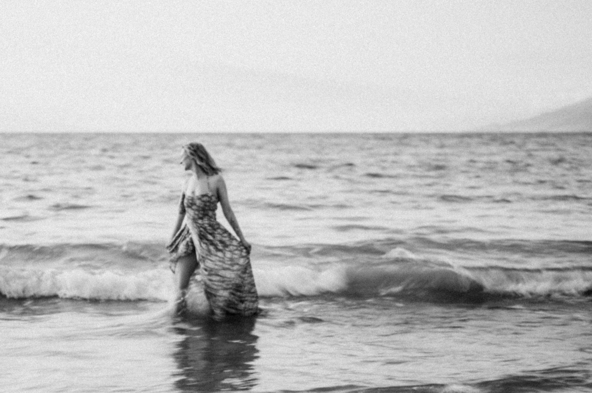
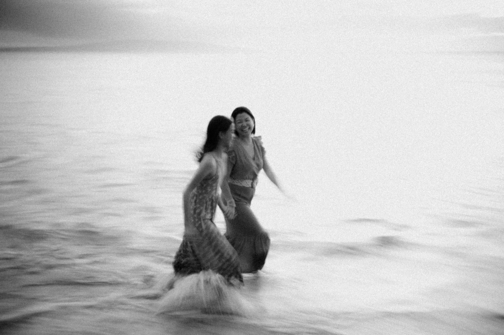

When color gives way to feeling.
A separate way of seeing, made with dedicated Leica monochrome cameras for the portraits whose emotion is stronger than their color.
A quieter way to see the people you love.
Color tells us where we were. Black and white often tells us how it felt. With the ocean, sky, and wardrobe reduced to light and tone, the eye lands on the important things: a hand at someone’s shoulder, a child’s expression, the way two people lean toward one another.
This is a small secret from Laurence and Jude: if we could photograph everything in monochrome, we probably would. There is a clarity to it—less decoration, more feeling—that has captivated us for decades.
It is not a filter. It is an entirely different camera, a different approach, and a different kind of memory.
Built to see only light.
For this upgrade, we photograph with a Leica M11 Monochrom or Leica Q2 Monochrom—not a color camera converted later. Their sensors are designed without a color filter array, allowing them to record luminance, detail, and tonal separation with extraordinary nuance.
That is why this collection carries an additional charge: it involves specialized dedicated equipment and individual black-and-white finishing, rather than a standard conversion applied across a gallery.
MonochromMANUAL, INTENTIONAL, EXQUISITE TONAL DETAIL
MonochromQUIET SPEED, NATURAL MOMENTS, CLEAN LIGHT
Watch why we choose monochrome.
Laurence shares the equipment and point of view behind this collection—and why a dedicated black-and-white camera sees a Maui session differently.
Watch it here, then decide whether you want a handful of quiet monochrome frames or a more complete companion collection alongside your color gallery.


“Without color, the eye goes straight to the connection.”
Choose the monochrome upgrade when you want a companion collection that feels more like a favorite print than a trend—rich shadows, luminous skin, clean highlights, and room for the image to breathe.
Choosing monochrome.
Will we still receive color photographs?
Yes. The monochrome upgrade complements your color gallery. It preserves the vibrancy of Maui while creating a timeless black-and-white interpretation of selected images.
Why is there an extra charge?
The upgrade uses dedicated Leica M11 Monochrom or Q2 Monochrom cameras and includes individual image finishing. It is a separate craft process, not a standard black-and-white filter.
Which sessions are best for black and white?
It can work beautifully for families, couples, proposals, maternity, and weddings. The strongest candidates are usually the images with a clear expression, affectionate touch, or simple, elegant shape.
Can we ask for a particular image in black and white?
Absolutely. Let us know which photograph speaks to you after the session; we can discuss the best way to include it in the final collection.